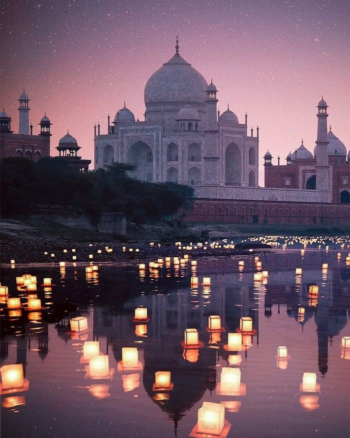

3D View
AR View

Play the background music while exploring the Taj Mahal.
The Taj Mahal, located in Agra, India, was commissioned in 1632 by the Mughal emperor Shah Jahan to house the tomb of his beloved wife Mumtaz Mahal. An ivory-white marble mausoleum, it is recognized as one of the greatest architectural achievements in history and a UNESCO World Heritage Site. Story of the Taj Mahal Long ago, in the 1600s, the Mughal Empire ruled much of India. Its emperor, Shah Jahan, was known for his wealth, his power, and his love for beauty. But above all, he was known for his love for one woman — Mumtaz Mahal. She wasn’t just his queen, she was his companion, his confidante, the one who stayed by his side through battles and journeys. Then came tragedy. In 1631, while giving birth to their 14th child, Mumtaz Mahal died. For Shah Jahan, the world fell apart. The man who commanded armies and built cities found himself helpless in grief. But instead of letting her memory fade, he decided her resting place would be unlike anything the world had ever seen. And so, the Taj Mahal was born. It wasn’t built overnight. For more than 20 years, thousands of workers toiled day and night. White marble was hauled from faraway Rajasthan, precious stones came from Persia, China, and the Middle East. Architects, calligraphers, and craftsmen from across Asia worked together. Slowly, stone by stone, dome by dome, the vision began to rise on the banks of the Yamuna River. The result was a wonder. The central dome soared like a pearl in the sky, flanked by graceful minarets. Inside, verses from the Quran were carved into the marble, while delicate floral patterns were inlaid with gemstones. Even the gardens around it were designed to symbolize paradise, with water channels reflecting the tomb. But the story didn’t end there. Years later, Shah Jahan himself fell ill. His son Aurangzeb took power and, fearing his father’s influence, imprisoned him in the Agra Fort. From his window, Shah Jahan could see the Taj Mahal in the distance — the resting place of his beloved. They say he spent his final years gazing at it, until he too passed away. His body was laid to rest beside Mumtaz, inside the very monument he had built for her. And so, the Taj Mahal became more than just stone and marble. It became a story — of love, of loss, of a man who built a dream to keep his queen’s memory alive forever. Even today, when people stand before its glowing walls, they don’t just see a monument. They feel the echo of that story, as if the past is still alive in its silence.